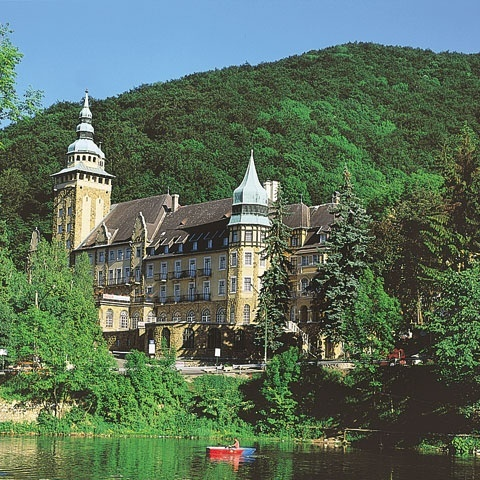
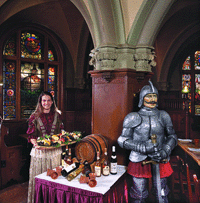
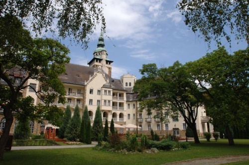
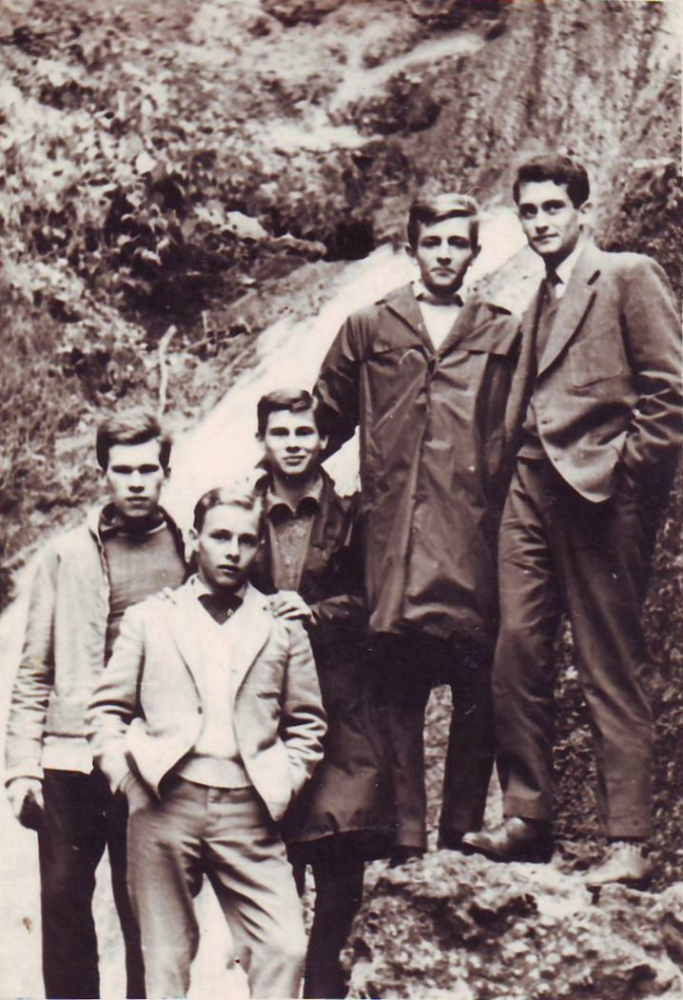
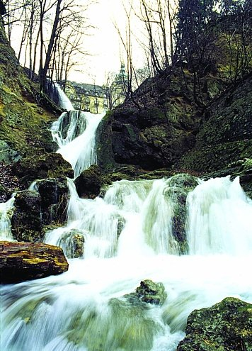

|
|
|
Lillafüred - ist
der Ortsname einer menschenleeren, künstlichen Waldlichtung, 12 km
westlich der Großstadt Miskolc, im Tal
des Gebirgflusses
Garadna, wo dieses Flüsschen zum Hámori Stausee
aufgestaut wird. Am Ufer des Stausees steht das 3-Sterne-Hotel Palota,
ein wunderschönes Palastgebäude im Neorenessaincen
Stil. Das
Hotel am Stausee ist
eine
Augenweide. Die Gegend um die Waldlichtung ist ein
verwaltungstechnischer Teil
von Miskolc. |
 |
|
 |
Rechts
das
Hotel von hinten. - Das Gebäude wurde im
Jahre 1930 vom Graf
István Bethlen erbaut und nach seiner Frau Lilla benannt.
Das
Palasthotel empfiehlt sich für die Erholung von
Großstadtbewohnern und Gestressten zur Entspannung. Links
die Weinstube im Keller. |
 |
|
 |
Sehenswürdigkeiten
in der Nähe:
- Szent-István-Tropfsteinhöhle,
- Szent-Anna-Kalktuffhöhle
Ausflugstipps:
- Höhlen-Thermalbad
in
- Tropfsteinhöhle in
- Weinbauort
<<< Klassenfahrt 1963
Der
Wasserfall vor dem Hotel >>>
|
 |
|
| |
|
Ungarn-Tourist Team

|
| |
| |
|